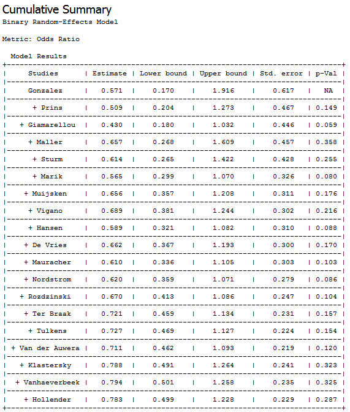
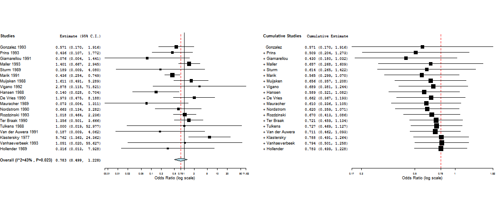

A cumulative meta-analysis is a sequence of meta-analyses on performed on subsets of the studies, starting with a single study and adding the other studies one at a time. A cumulative meta-analysis shows how the overall estimate changes as each study is added to the pool.
To see an example of cumulative meta-analysis, do the following steps.
The cumulative summary and forest plots are shown below.
  | Sorting Data by Columns | Leave-One-Out Meta-Analysis | |